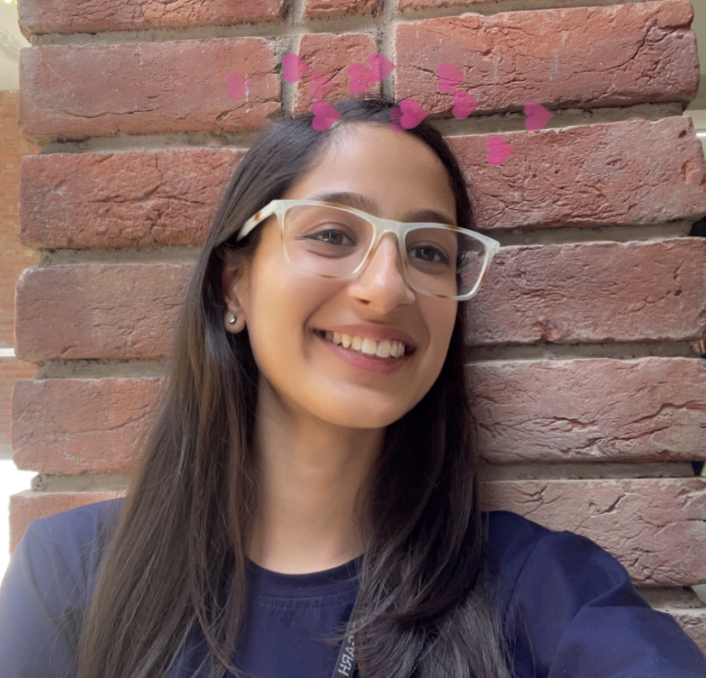

Asmi Manhas
Mohali, Punjab | +91 9888824043 | asmimanhas@gmail.com
DOB: 06-11-2003
LinkedIN
GitHUB
Education
CHANDIGARH UNIVERSITY
Mohali, Punjab
Sept 2021- Expected June 2025
Bachelor of Engineering
Major in Computer Science; Honours in Internet of Things
Cumulative GPA: 8. 37/10
Relevant Coursework: Computer Networks; Operating Systems; Embedded Systems; Data Structures and Algorithms;
GURU NANAK PUBLIC SCHOOL
Chandigarh
Higher Secondary Education
May 2019 - June 2021
Cumulative Percentage: 81.2%
SAUPIN'S SCHOOL
Chandigarh
Secondary Education
March 2017 - March 2019
Cumulative Percentage: 81.2%
Work Experience
SAMSUNG PRISM (Samsung Research Institute Bangalore)
Apprenticeship
Remote, Mohali, India
IoT Edge and ML research and development
- Worked on graph databases and Smartthings api (e.g: building project for smart home with the use of smartthings sdk ),
saving 10 hours per week of manual reporting work
- KPIs achieved for the projects were graphDB compilation from source code on Linux for efficient arm device based server.
- Used python based scripts for machine learning algorithms for smart home devices data management, and design of new
products.
University Projects
SMART LAB AUTOMATION
Feb 2024
- Designed a smart IoT lab for power efficiency, security, student monitoring and inventory management.
- Winner of second prize in IoTShala 2.0 - IoT projects workshop and competition.
- Winner of 3rd prize in CU Projects Expo 2024, engineering cluster (24 shortlisted projects among 400+ teams).
SMART BRAILLE FOR CHILDREN
Mar 2023
- Smart Braille enables students to read and learn smartly using computers and the internet.
- Works on the principle of braille script reading, with the help of a microcontroller processing.
- Includes the self learning mode, input keypad and the braille screen.
Additional
Technical Skills: C++; C; PYTHON; SQL;HTML; Operating System; Computer Networks;
Soft Skills: Team working Skills; Leadership Quality; Communication Skills; Interpersonal Skills;
Certifications & Training: NPTEL Introduction to IoT (Elite certificate), Oracle Database Foundations Course Certification.
Awards:Class Representative 2021-2024; IoTShala 2.0 Silver Medal; 3rd prize in CU Projects expo 24 out of 400+ participants.
Languages:Fluent in English, Hindi, Punjabi;